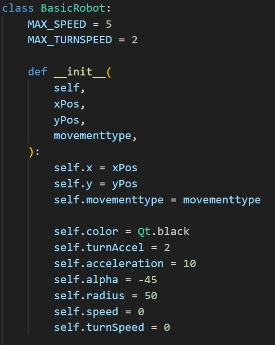
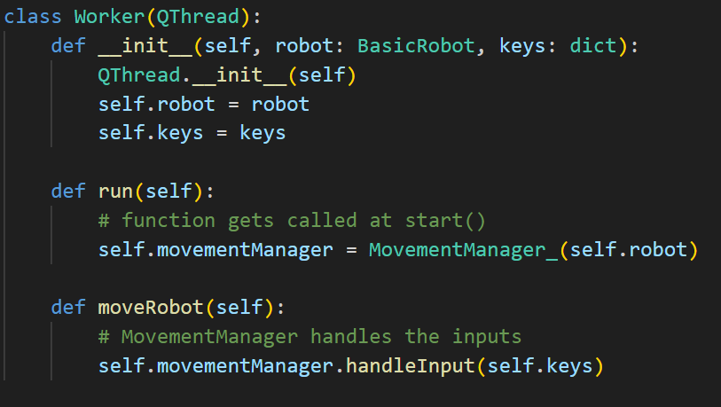
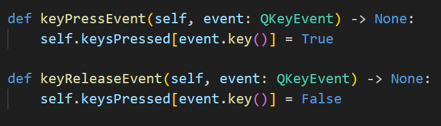
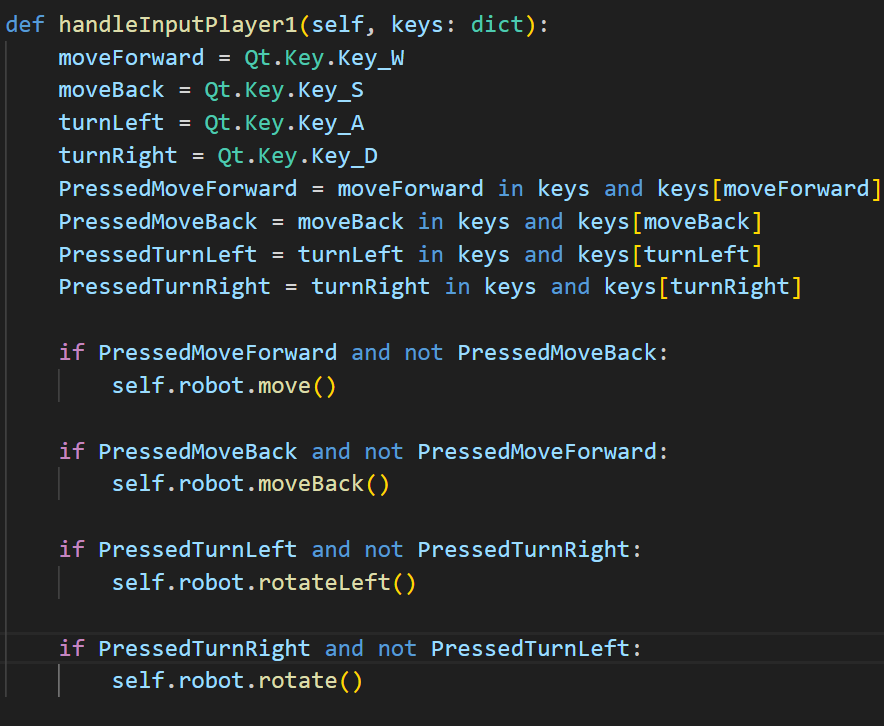

Sprint 4
Minimum viable product:
-1v1 type of game mode controlled with one keyboard (local coop)
-5 different types of terrain
-Main Menu
-Ability to shoot for both robots
-in-game UI to show cooldown and health of robots
-Main Menu
-Including sound effects and music
Stretch goals:
-Different classes of robots
-Multiple attack-abilities to choose from
-Online co-op
Creating Prototype game menus(Nico):
The menus


We worked with Qt Designer to create Ui-files which can be loaded through the loadui()function.
Working with Qt Designer is way more comfortable than trying to create the UI with grid based layouts since we can choose the positions of the buttons directly.

Problem:
The images we included in Qt Designer didnt show up when we executed the python code.
Therefore we add the images manually in the code.
The class MainMenu

The functions, responsible for changing the menus

An instance of the menu we want to visit is created and gets displayed.
Afterwards the old menu is closed.
Improving map editor:
Added an undo function, to delete the latest made drawing.

Added a new function, to revert the screen to its inital stage and delete all made drawings.


Collision Detection:
Implementing collision detection turned out to be a little more challenging than I thought.
In the solution I ended up with I basically iterate over every tile the robots plans to move across.
If we encounter any solid tiles within the radius of the robot, we stop moving at the last position at which there were no solid tiles within the robots radius.
Code for collision detection:

A robot hitting a wall and only being able to go away from it:
Some refactoring
Basic Robot needs only position and Movementtype:

Added some type Hints:

Player Controls:
First I added the PlayerControl as an enum so we can say which Robot we want to control for now just one.
Next I wanted to get the Player Inputs a Problem was that KeyEvent only Returns one Pressed Key
also it does not automatically keep track of the Keys we keep Pressing.
My solution was to use Key Press- and Release- Events and write the Keys in a dictionary:

We keep track of all Pressed Keys so we can easily add new Player Controls.
The MovementManager calls a function that than uses the inputs:
